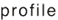
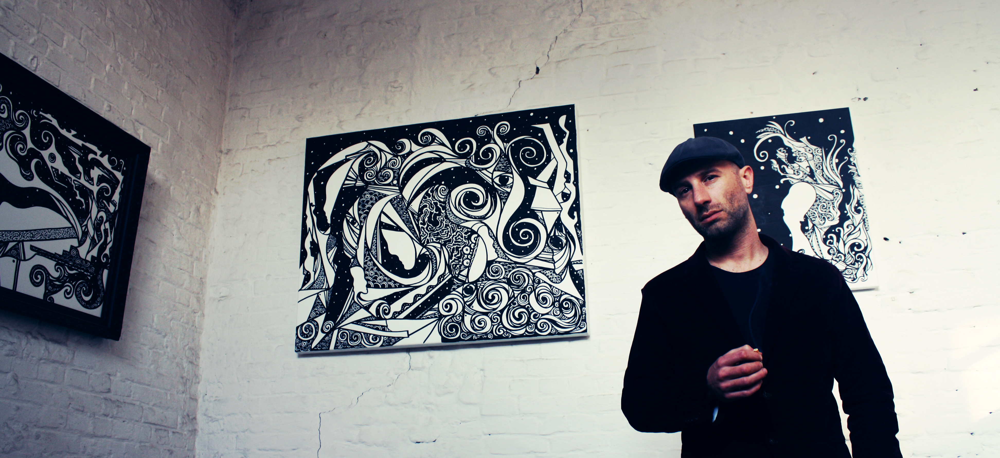

|  |

Kenneth KENISMAN Claes (°1978, Belgium)
"For the poet is a light and winged and holy thing, and there is no invention in him until he has been inspired and is out of his senses, and the mind is no longer in him: when he has not attained to this state, he is powerless and is unable to utter his oracles." [Ion, 534]. PLATO
KENISMAN is considered as one of the profound leaders of the current underground avant-garde. His movement does not allow creativity to be blurred by a previsioned image to be (re-) produced on paper. KENISMAN's approach lies in the pure and undistracted concentration on the natural evolution of lines and shapes under the artist's hand. Over the last years he has had successful solo exhibitions both national as international.
KENISMAN is also active as a film maker. In (2012) his movie KARMA was screened at Cinema Zuid, the cinema at the Antwerp Museum of Photography. His music video Psychedelic Indian Fusion (2011), commissioned by Tikki Masala, was listed by 'Worldpress Internet Top Posts' and was elected best worldwide video on Februari 11, 2011 by 'The Daily Psychedelic Video'and gained already more than 130000 views on his YouTube Channel.
Through his art KENISMAN gains the possibility to distinguish his sight from an uncertain and deceptive reality. In his artistic process lies a meditative force that allows him to separate external perception from internal vision. By this means, KENISMAN is able to create a clearly defined inner space for reflection and to develop a true inner sight. This inner sight makes it possible to transcend the representational realism of much conventional art that is based on a misleading idea of reality. Like a third eye, KENISMAN's practice allows him to direct his attention to his inner reservoir of creativity and to discover the means to give it an appropriate artistic expression, thereby freeing his artistic activity from the preconditioned mind. In concentrating exclusively on the act of creation itself, the artist gains access to his individual inner sources of inspiration and originality. In transcending the conscious, in leaving behind the known reality with its common knowledge and established viewing patterns, it is the artistic process itself that reveals the creative energy of the unconscious. It provides the means to understand the nature and functioning of the visual sense and allows insights into the driving forces of true and original artistic creativity. Eye=I
When a rifleman aims at his target, he knows what he wants to do. He wants to hit the bull's-eye. Before he shoots, he knows what the target is; he knows that the black circle in the center of it is the bull's-eye; and he knows that hitting the bull's-eye consists in causing a bullet to pass through that black circle.
He also knows, before he has squeezed the trigger, that if, after he has squeezed it, a hole appears in the black circle, he will have succeeded in doing what he wanted to do; and that if there isn't a hole there, he will have failed. Furthermore, the rifleman knows what he ought to do to hit the bull's-eye. He knows what position he ought to assume, how he ought to adjust the sling, where exactly he ought to place his left hand, where he ought to place the butt so that it fits his shoulder and cheek, what the sight picture ought to be, how he ought to exhale a little and then hold his breath when the sight picture is correct, and how he ought to squeeze off the shot without knowing exactly when the explosion will come, so that he won't flinch until after it is too late to spoil his aim.
If, after the rifleman has attempted to obey all these rules, he fails to hit the bull's-eye, any person can tell him, and the rifleman will agree, that he did fail; and that, since he did, he had not obeyed all the rules. For, if he had obeyed them, there necessarily would have been a hole in the bull's-eye.
If, on the other hand, he does hit the bull's-eye, the white disc is displayed and the rifleman is congratulated. He is congratulated, whether the people who congratulate him realize it or not, for having been able to learn and to obey all the rules.
When we congratulate an artist for being creative, however, it is not because he was able to obey rules that were known before he painted his picture or wrote his novel or poem, so that thereby he succeeded in doing what had been done before. We congratulate him because he embodied in colors or in language something the like of which did not exist before, and because he was the originator of the rules he implicitly followed while he was painting or writing.
The academic painter or writer is like the rifleman. He, too, aims at a known target, and he hits his bull's-eye by obeying known rules. As Sir Joshua Reynolds wrote:
"By studying carefully the works of great masters, this advantage is obtained; we find that certain niceties of expression are capable of being executed, which otherwise we might suppose beyond the reach of art. This gives us a confidence in ourselves; and we are thus incited to endeavor at not only the same happiness of execution, but also at other congenial excellencies. Study indeed consists in learning to see nature, and may be called the art of using other men's minds."
Unlike either the rifleman or the academic painter or writer, Kenisman does not initially know what his target is. Although he seems to himself to be "aiming" at something, it is not until just before he affixes his signature or seal of approval to his work that he finds out that this is the determinate thing he was all along "aiming" at, and that this was the way to bring it into being. Kenisman does not already envisage the final result. He does not therefore already have an idea or image of it. And his activity therefore is not "controlled," as in the rifleman or academic painter case, by a desire for an envisaged result and beliefs about how to obtain it.
We do not judge a painting, poem, or other work to be a work of creative art unless we believe it to be original. If it strikes us as being a repetition of other paintings or poems, if it seems to be the result of a mechanical application of a borrowed technique or style to novel subject matter, to the degree that we apprehend it as such, to the same degree we deny that it is creative. There are men who have trained themselves to paint in the manner of Rembrandt, and some have become so good at it that even an expert aided by X-rays may find it hard to decide that their pictures were not painted by Rembrandt.
To create is to originate. Kenisman follows from this that prior to creation the creator does not foresee what will result from it. As T. E. Hulme put it, "to predict it would be to produce it before it was produced."
"The aim of art is not to copy nature, but to express it. You are not a servile copyist, but a poet!" cried the old man sharply, cutting Porbus short with an imperious gesture. "Otherwise a sculptor might make a plaster cast of a living woman and save himself all further trouble. Well, try to make a cast of your mistress's hand, and set up the thing before you. You will see a monstrosity, a dead mass, bearing no resemblance to the living hand; you would be compelled to have recourse to the chisel of a sculptor who, without making an exact copy, would represent for you its movement and its life. We must detect the spirit, the informing soul in the appearances of things and beings. Effects! What are effects but the accidents of life, not life itself? A hand, since I have taken that example, is not only a part of a body, it is the expression and extension of a thought that must be grasped and rendered. Neither painter nor poet nor sculptor may separate the effect from the cause, which are inevitably contained the one in the other. There begins the real struggle! Many a painter achieves success instinctively, unconscious of the task that is set before art. "
The Unknown Masterpiece (Le Chef-d'œuvre inconnu), by Honoré De Balzac (1831)
Kenisman has a sense that his activity is directed, that it is heading somewhere. Now the cash value of the statement that the artist has a sense of being engaged in a directed activity, of going somewhere despite the fact that he cannot say precisely where he is going while he is still on the way, is that he can say that certain directions are not right. If there were in him no tendency to go in a certain direction, he would not resist being pulled in just any direction.
This element of conscious resistance to the lure of beckoning side paths, or the exercise of critical judgment, is what sets his creative activity apart from activity that is acquiescent to the leadership of revery.
According to Brand Blanshard, invention turns on a surrender to the workings of necessity in one's mind. There is in Kenisman a surrender of the will to an order whose structure is quite independent of it and whose affirmation through the mind is very largely so. Its being subject to critical control sets his art apart from the art of the insane.
"But he who, having no touch of the Muses' madness in his soul, comes to the door and thinks that he will get into the temple by the help of art he, I say, and his poetry are not admitted; the sane man disappears and is nowhere when he enters into rivalry with the madman." [Phaedrus, 245]. PLATO
In his creative process, two moments may constantly be distinguished, the moment of inspiration, when the new suggestion appears, and the moment of development or elaboration. The moment of inspiration is sometimes accompanied by exalted feelings, and this is why, according to Charles Lamb, it is confused with madness. According to Lamb, men, finding in the raptures of the higher poetry a condition of exaltation, to which they have no parallel in their own experience, besides the spurious resemblance of it in dreams and fevers, impute a state of dreaminess and fever to the poet. But the true poet dreams being awake. He is not possessed by his subject but has dominion over.
Roland Penrose writes in the introduction to Edward Quinn's photographic study:
"although cameras have recorded thousands, perhaps millions of pictures of an artist, there remains a desire to know more, a desire which is based on our lack of understanding of how the mind of an artist functions."
According to French film director Henri-Georges Clouzot, the moving image is able to reveal these secrets better than any other medium. Rejecting most films on art, particularly those which attempt to analyse an artist's work by guiding the spectator's gaze from one detail to the next, Clouzot developed a new way of filming that was intended to integrate the artist, the work and the creative process.
Like Clouzot, it's Kenisman's aim to portray in his Time lapse-videos the chronological development of artistic activity rather than the already finite expression of the finished object. The changes, the breaks, the choices and the decisions of the artist are seen as a revelation of the artist's mental process and thus the truest representation of the actual mechanisms of creativity.
The videos show the changes and revisions involved in kenisman's creative method; he is shown working, with unfaltering certainty. It is seen as the visual staging of the genesis of imagination and creativity; it testifies to the mental and emotional aspects of artistic production in a way that the finished object can never do. His Time lapse- creation videos are a reiteration of the romantic myth of creativity as an essential and transcendent power which is possessed by the artist.
"He seems incessantly hunting to fix his visual prey, as the cave artist fixed his prey on the walls of Altamira. His eyes are constantly searching form, dimension and movement. All of his gestures are precise and incisive. A pencil in his hand becomes a scalpel ready to cut the space before him." Alexander Liberman
Kenisman's art through the years has seldom shown a constancy of style; his is a contradictory process of attack, then withdrawal, then attack again, each time advancing further than before on the path of artistic discovery.
“There is no such thing as a wrong painted stroke, only an insecure one destroys." Kenisman
“Insight is the beginning of change.” Kenisman